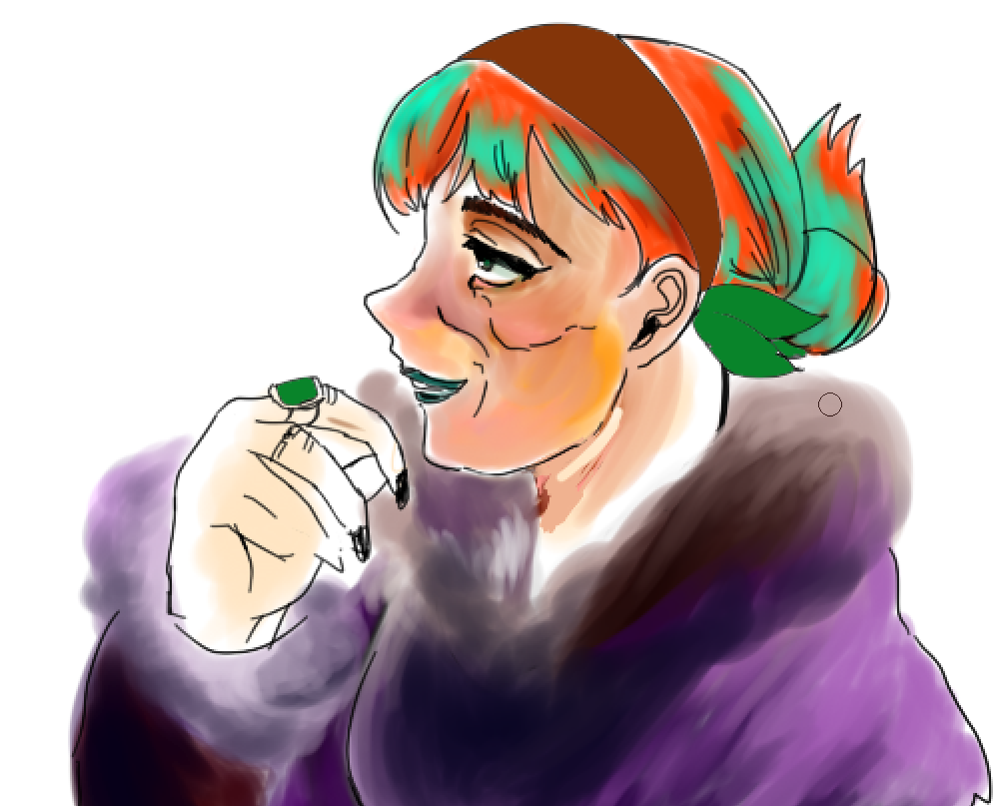
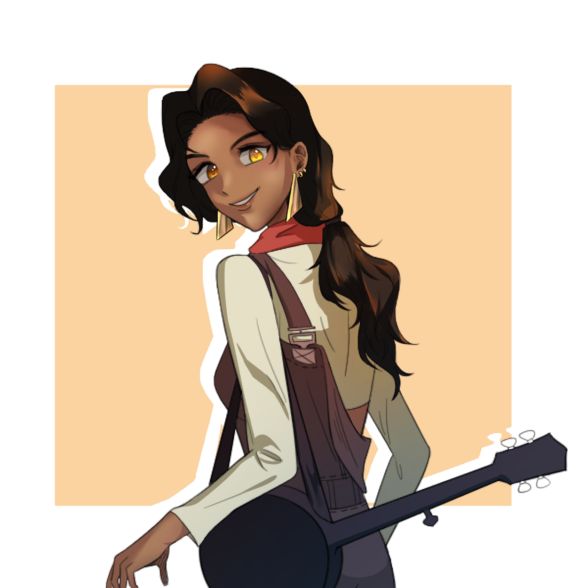

-

GAME MASTER
마스터 삐룩
준비를 줄이겠다고 여섯 해 동안 말해온 사람
여섯 해 동안 일곱 캠페인을 마스터링했다. 준비를 적게 하도록 설계된 룰을 정반대로 돌리는 연출가형 마스터이고, 자기 실패를 매번 후기에 적어 두는 사람이다.
-
PLAYER
직스
규칙을 이야기의 장치로 읽는 사람
시즌1부터 파이널까지 전 구간을 완주한 유일한 플레이어. 5년치 세션을 촬영했고, 룰을 먼저 이해해 그것을 옆자리에서 쓸 수 있게 만드는 자리에 섰다.
-

PLAYER
오랑시
매번 다른 사람이 되는 사람
시즌1 1.5화에 합류해 마지막까지 남았다. 싸이코패스 할머니 유령사부터 따스한 거머리까지, 같은 사람이 만든 것을 믿기 어려울 만큼 캐릭터 폭이 넓다.
-

PLAYER
날다다
애정이 매번 물건으로 바뀌는 사람
시즌3부터 합류해 세 캠페인을 함께했다. 캐릭터에 애착이 생기면 그 애착이 매번 물건이 된다. 초상화가 되고, 악보가 되고, 3만 자짜리 후기가 된다.
-

PLAYER
에이포
초보자의 눈으로 룰을 분해하다
시즌3에 "정진정명한 초보"로 합류해 두 시즌을 함께했다. 입문자였는데 첫 후기부터 하중을 계산하고 특능 조합을 따지며 룰을 뜯어봤다.
-

PLAYER
쟈키퐁
가장 어려운 자리를 맡은 뉴비
첫 티알피지 캠페인에서 잿불의 작전관을 맡았다. 고인물도 번거로워하는 자리다. 어렵다고 매 회차 정직하게 적으면서 11세션을 끝까지 지켰다.
-

✦ ✦ ✦